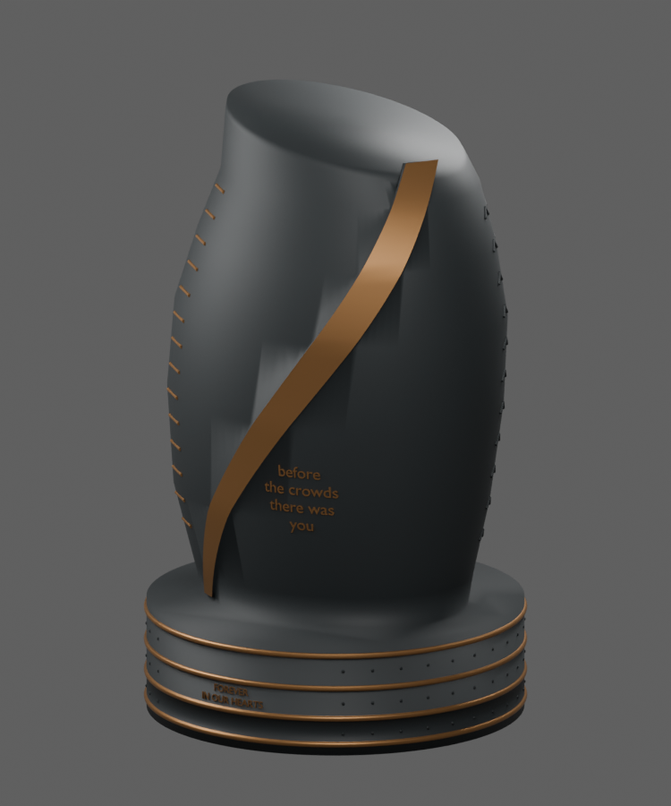
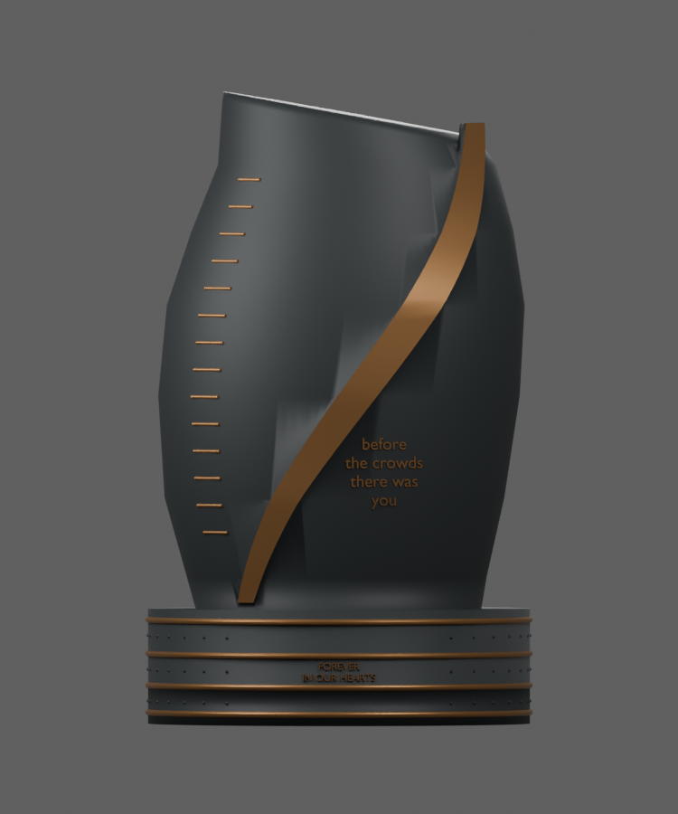
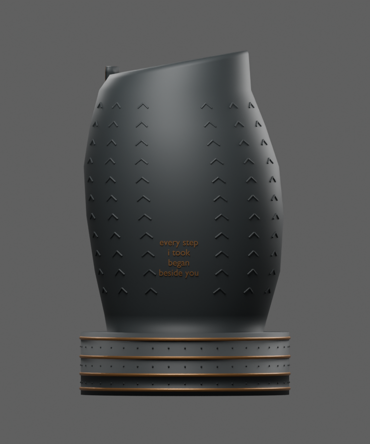
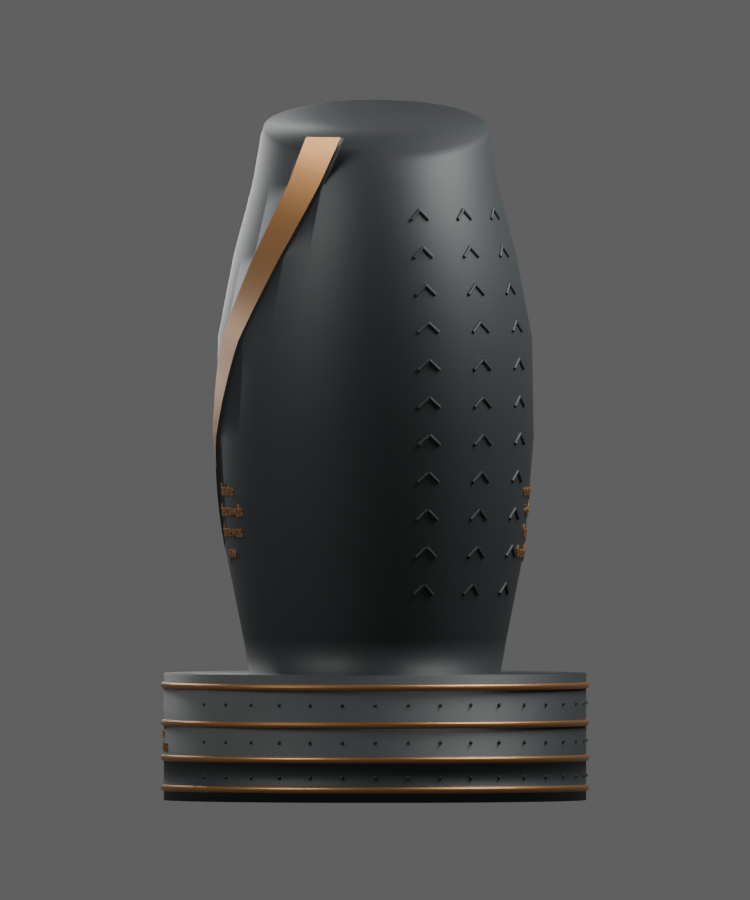
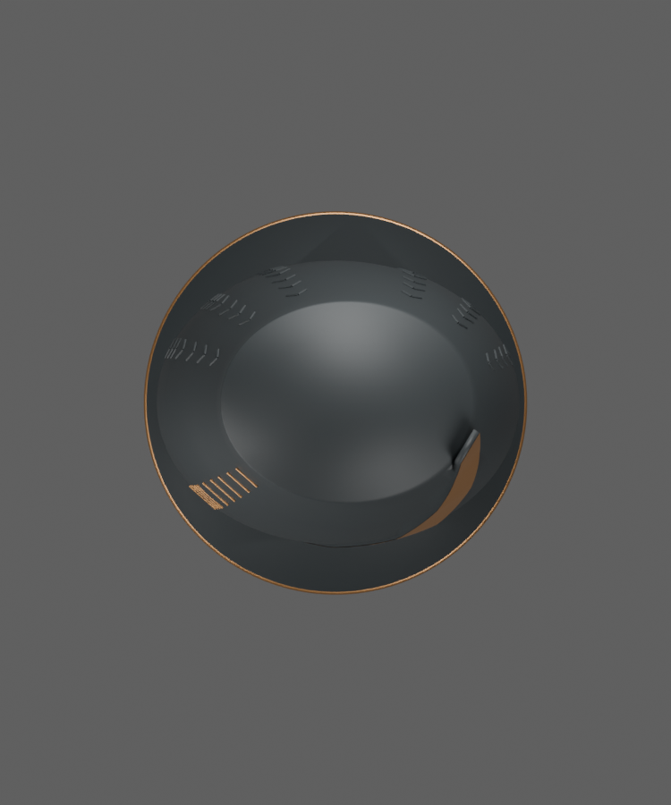
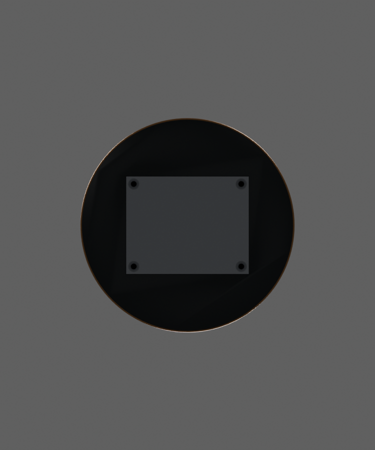
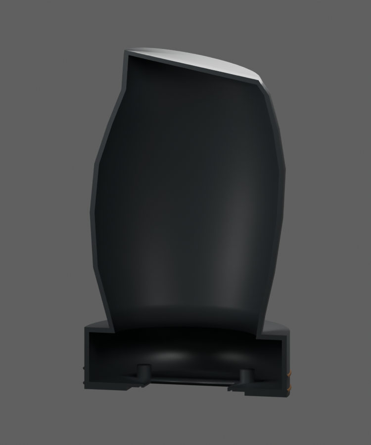

GRACEFUL TRIBUTE / AETERNA · CAD REVIEW V2
Every Step Legacy
These views are rendered from the actual editable CAD, not generated catalog imagery. This is a design-review candidate, not a production-approved urn. Some upper rims, folded detail and lettering remain separate visual geometry rather than part of the printable shell. Compare the geometry with the original reference, then send feedback using the view numbers. The reference sheet contains unverified capacity and hardware statements; it records intent, not test results.
01 / Overall shape

Open image for a closer look. Reference your feedback to 01.
02 / Front

Open image for a closer look. Reference your feedback to 02.
03 / Rear

Open image for a closer look. Reference your feedback to 03.
04 / Side

Open image for a closer look. Reference your feedback to 04.
05 / Top

Open image for a closer look. Reference your feedback to 05.
06 / Bottom closure

Open image for a closer look. Reference your feedback to 06.
07 / Cavity cutaway

Open image for a closer look. Reference your feedback to 07.
Your review
Review shape and appearance first; supplier tolerances and physical performance are separate checks.
- Shape: does it capture the original folded, athletic character? What should be taller, softer or more pronounced?
- Bronze accents: is the divider broad enough, and are the rims balanced?
- Texture and lettering: are the tread, stitching, wording and placement right?
- Closure: is bottom loading with a fixed top the desired experience?
- Priority: name the three most important changes before the next revision.
You can also annotate the PDF in Preview and share the annotated copy. No CAD software is required to review these views.